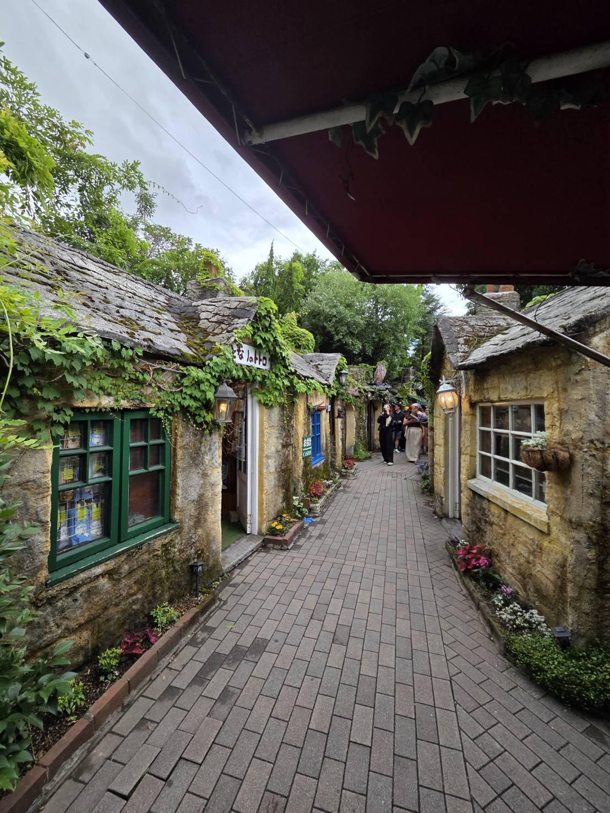
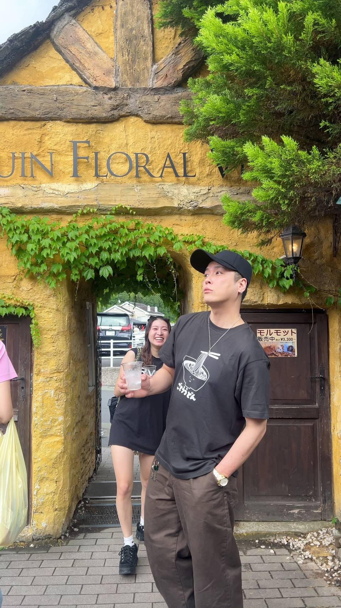
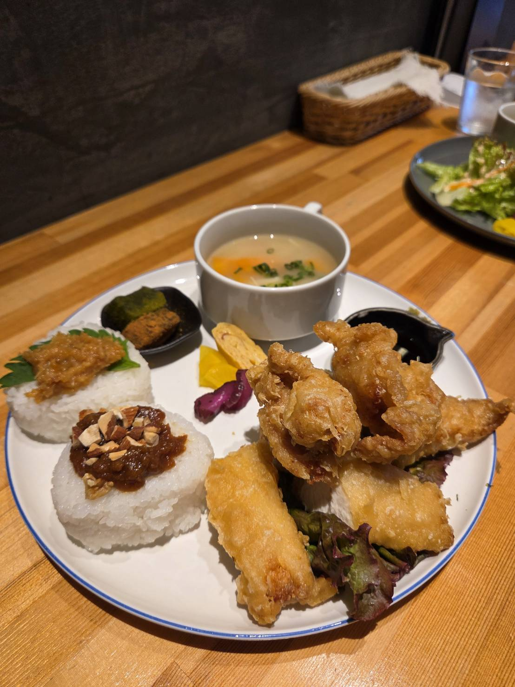
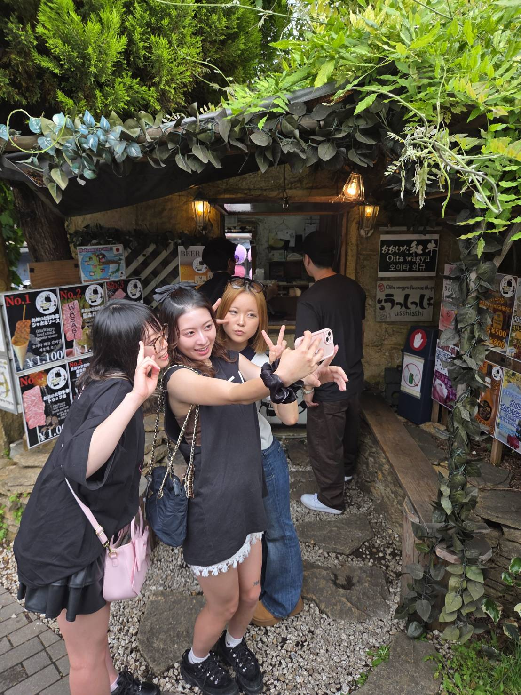
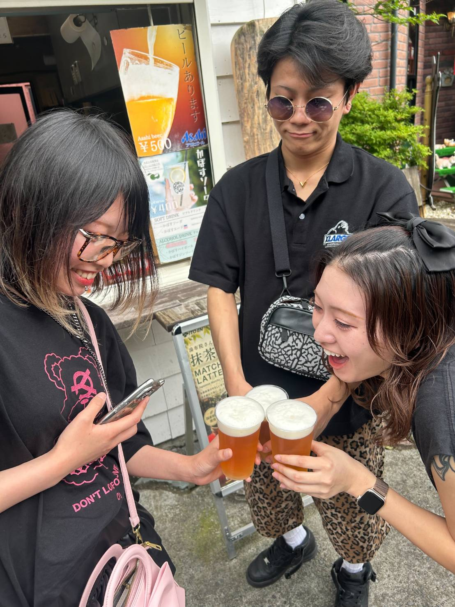
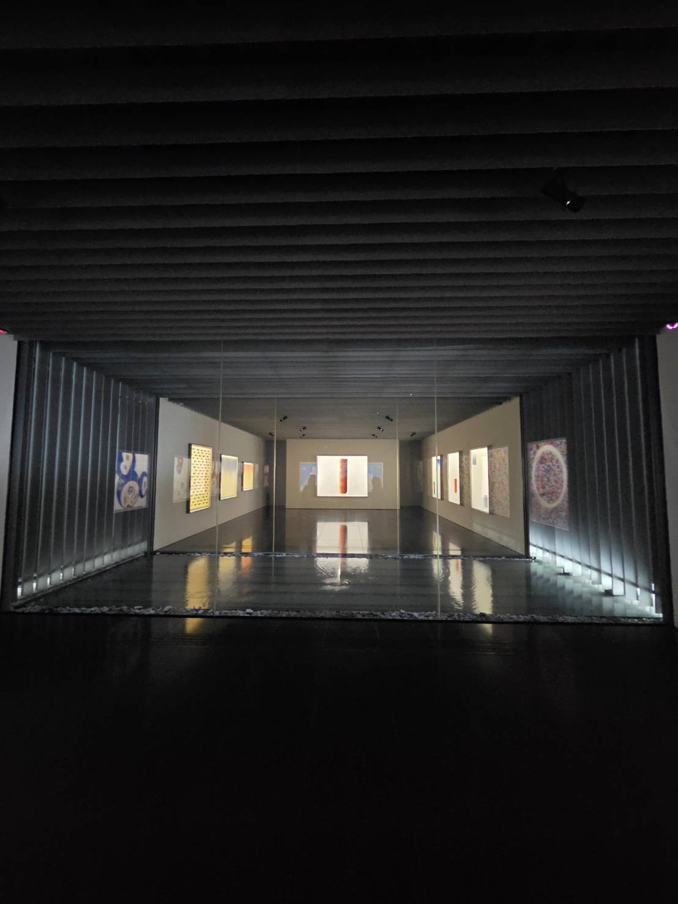
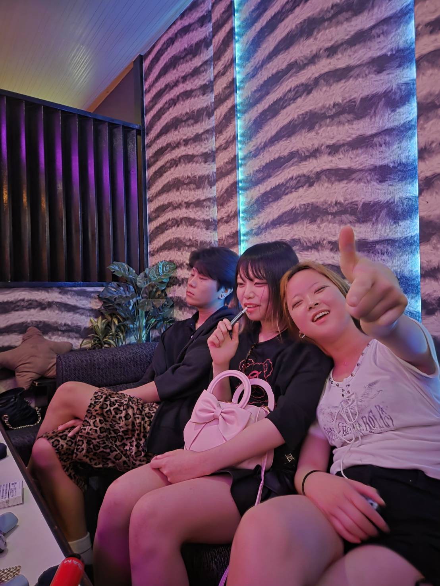
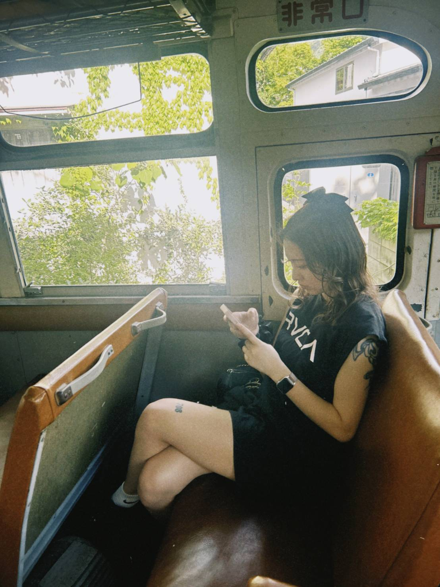

湯布院でリフレッシュしてきました
YANAGAWA BANKSY スタッフ旅行記

はじめに｜先週、湯布院へ行ってきました
こんにちは、YANAGAWA BANKSY のスタッフです。 先週、お店のメンバーで 大分県の湯布院（ゆふいん） へ行ってきました。 柳川からだと意外と近い湯布院。営業前のリフレッシュ旅行として、 食べ歩き・飲み歩き・観光をギュッと詰め込んだ1日を過ごしてきました。
このページでは、湯布院で実際に行った場所・食べたもの・印象に残ったスポットを写真と一緒にご紹介します。 柳川にお越しのお客様で「次の休みに湯布院も行ってみたいな」という方の参考にもなれば嬉しいです。
湯布院といえば、まず「フローラルビレッジ」

湯布院といえば外せないのが 湯布院フローラルビレッジ。 イギリスのコッツウォルズ地方をモデルにした、おとぎ話のような街並みが広がっています。 石造りの建物に花が咲き乱れて、ぜんぶ写真映え。 ピーターラビットや魔女の宅急便モチーフのお店もあって、童心に帰れる空間でした。
お土産屋さんや雑貨屋、フクロウカフェまであって、ふらっと立ち寄っても2〜3時間あっという間。 女子旅・カップル・家族連れ、誰と来ても楽しめる場所だと思います。
大分名物「とり天」食べました

大分に来たら絶対に食べたいのが とり天。 鶏のから揚げと唐揚げの中間みたいな、衣がふわっとした天ぷら風の鶏料理です。 ポン酢と練り辛子で食べると、サクッと軽くてあっという間に完食。 柳川のお店では出していないので、ちょっと羨ましい大分の郷土料理ですね。
ちなみに、お酒との相性も抜群。 ビールはもちろん、ハイボールにも、レモンサワーにも合います。 「揚げ物 × お酒」は鉄板の組み合わせですが、とり天はその中でも特に軽くて飽きないのが魅力。
湯布院で出会った「うっしっしshhi」の大分和牛

そしてもう一つ、湯布院で出会ったのが 「うっしっしshhi（うっしっしー）」 という大分和牛のお店。 看板の和牛串がジューシーで、緑に囲まれた可愛い入口は写真スポットとしても人気。 「Oita wagyu / 와규 / 和牛」と多言語表記もあって、海外からのお客さんもたくさんいました。 食べ歩きの途中、ここで立ち止まって和牛を頬張る幸せ ✨
柳川にも美味しい和牛のお店はありますが、観光地でこういう「ここでしか食べられない一品」に出会うのは旅の醍醐味です。
湯の坪街道で食べ歩き｜昼から乾杯、カニカマも美味しかった

湯布院駅から金鱗湖（きんりんこ）まで続く 湯の坪街道（ゆのつぼかいどう） は、 食べ歩きグルメの宝庫。ソフトクリーム、コロッケ、唐揚げ、和菓子、そして意外と本気なのが カニカマ。
「えっ、カニカマ？」と思うかもしれませんが、これがマジで美味しい。 本物のカニみたいな食感で、その場でほぐして食べる熱々のやつは別物でした。 食べ歩きしながら街を散策するだけで、湯布院は半日楽しめます。
金鱗湖と湯の街の風景
湯の坪街道の終点にある 金鱗湖（きんりんこ） は、湯布院のシンボル的な観光スポット。 湖底から温泉が湧き出していて、特に冬の朝は朝霧が立ち込めて幻想的な景色になるそうです。 私たちが行った日は晴れていて、湖面に由布岳が映ってきれいでした。
金鱗湖の周りには小さなカフェや美術館もあるので、 食べ歩きで疲れたら、ここで一息つくのがおすすめ。
湯布院のアート空間にも立ち寄り

湯布院って温泉と食べ歩きのイメージが強いですが、実は アートスポット も多い街なんです。 静謐な空間に現代アートが並ぶギャラリーは、賑やかな観光地から少し離れて落ち着ける場所。 食べ歩きで疲れた体を休めるにもちょうど良くて、感性のリセットになりました。
ピンクのネオンに彩られた YANAGAWA BANKSY も、ある意味「ストリートアート × バー」な空間。 いろんなアート空間に触れると、自分のお店の演出にもアイデアが生まれます。
夜は飲み歩き｜湯布院の地酒もチェック

観光を楽しんだあとは、お楽しみの 飲み歩き。 湯布院には地元の焼酎・日本酒を出してくれる小さなお店が点在していて、観光地とは違う「日常の湯布院」が味わえます。 大分は焼酎の名産地でもあるので、芋・麦・米いろいろ試せました。
いつもは YANAGAWA BANKSY でお客様をお迎えする側ですが、 こうやってお客さんになって他のお店を回ると、いろいろ勉強になります。 「どんなお店だと長居したくなるか」「どんな接客だと安心するか」を改めて感じた夜でした。
柳川 → 湯布院 アクセス｜意外と近い

柳川から湯布院までは、車で約2時間半。 高速道路を使えば、朝出発して夕方には湯布院に着けます。 1泊2日でも十分楽しめる距離なので、お客様にも「次の連休どこ行こう？」と聞かれたらおすすめしたい場所です。
電車派の方は、JRで博多経由・もしくは大分経由になります。 時間はかかりますが、木の窓枠から景色を眺める レトロな電車旅 は、それだけで旅情たっぷり。 車内で湯布院の予習・写真整理をする時間も、また旅の楽しみのひとつです。
湯布院で印象に残ったこと
- フローラルビレッジは写真映え抜群、雑貨好きには天国
- とり天はマジで美味しい、ポン酢辛子が正解
- カニカマを侮ってた、湯の坪街道なら本気のやつが食べられる
- 金鱗湖は朝の方が幻想的らしい（次は早朝行きたい）
- 地元の小さな飲み屋は観光地離れた裏路地が当たり
おわりに｜リフレッシュして、お店に戻ります
営業前のちょっとしたお休みで、たっぷり湯布院を満喫してきました。 観光・食べ歩き・飲み歩きを1日に詰め込んだ、満足度の高い旅でした。 リフレッシュした分、これからもお客様に 「接客が面白い」「また来たい」 と思ってもらえるよう、 柳川の夜を盛り上げていきます。
柳川にお越しのお客様で湯布院にも興味がある方は、ぜひ YANAGAWA BANKSY でも湯布院の話、聞かせてください。 おすすめスポットや美味しかったお店の情報、共有しましょう！